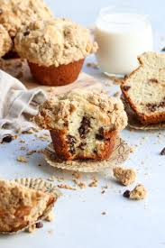

Crumbcake

Description
This is the crumbiest cake you will ever eat, and that's a good thing!
This sweet and savory dessert is a great end to any meal.
You can put it in a muffin tin or bread pan and the end result will always be delicious!
Ingredients
- 1 tablespoon all-purpose flour
- 1/2 cup packed brown sugar
- 2 tablespoons butter, softened
- 1/2 cup chopped walnuts
- 2 cups semisweet chocolate chips
- 2 cups all-purpose flour
- 1 teaspoon baking powder
- 1 teaspoon baking soda
- 1/2 teaspoon salt
- 1/2 cup butter, softened
- 1 cup white sugar
- 1 teaspoon vanilla extract
- 3 eggs
- 1 cup sour cream
- 1 1/2 cups semisweet chocolate chips
Steps
- For the crumb topping: In a small bowl, combine 1 tablespoon flour, 1/2 cup brown sugar, and 2 tablespoons butter.
- Stir in 1/2 cup nuts and 2 cups chocolate chips. Set aside.
- Preheat oven to 350 degrees F. Grease and flour a 9x13 inch pan. In a small bowl, combine 2 cups flour, baking soda and salt. Set aside.
- In a large bowl, cream 1/2 cup butter, 1 cup sugar and 1 teaspoon vanilla until light and creamy.
- Add eggs one at a time, beating well after each addition.
- Add flour mixture alternately with sour cream. Beat until smooth.
- Fold in 1 1/2 cups of chocolate chips.
- Spread batter into a 9x13 inch pan. Sprinkle topping evenly over batter.
- Bake at 350 degrees F for 45 to 50 minutes, or until a toothpick inserted into cake comes out clean. Cool completely.